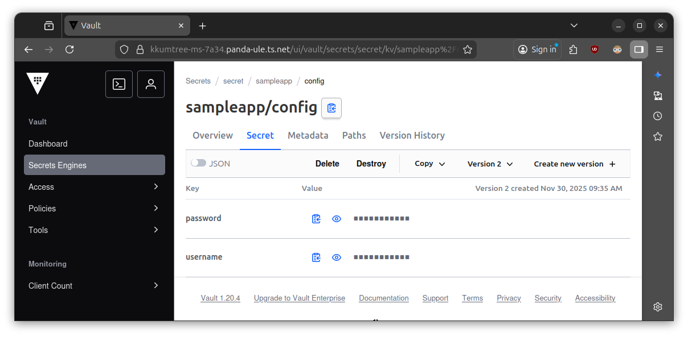

CloudNet@에서 진행하고 있는 CI/CD Study 7주차에는 Vault를 다루었습니다.
자세한 설명은 해당 공식 페이지에서 해주고 있지만, 그저 1password 같은 패스워드 관리 서비스가 엔드유저 대상이라면 Vault는 인프라 관리자 대상으로 사용되는 것으로 알고 있는 제게는 흥미로운 주차였습니다.
이번 스터디에서는 계속해서 kind로 로컬 Kubernetes(k8s)를 활용했기에, 이번에도 비슷하게 배포해보겠습니다.
0. 실습 환경 준비 - kind 클러스터 배포
해당 구성들은 아래 GitHub에 탑재되어 있습니다.
https://github.com/kkumtree/ci-cd-cloudnet-study 의 7w 폴더
kind create cluster --name vault --image kindest/node:v1.32.8 --config - <<EOF
kind: Cluster
apiVersion: kind.x-k8s.io/v1alpha4
nodes:
- role: control-plane
- role: worker
labels:
ingress-ready: true
extraPortMappings:
- containerPort: 80
hostPort: 30080
EOF
echo "[Provisoning..] ingress-nginx in vault cluster"
kubectl config use-context kind-vault
kubectl apply -f https://raw.githubusercontent.com/kubernetes/ingress-nginx/main/deploy/static/provider/kind/deploy.yaml
kubectl wait --namespace ingress-nginx \
--for=condition=ready pod \
--selector=app.kubernetes.io/component=controller \
--timeout=90s
sudo tailscale serve -bg localhost:30080
kubectl apply -f whoami.yaml
이번에는 UI 관련해서 80포트 하나만 뚫어놓고 사용하고 싶었는데, 뭔가 하나씩 막히는 중입니다.
그래서 traefik/whoami 이미지를 활용하여 디버깅을 하기로 했습니다.
# cat kind/whoami.yaml
apiVersion: v1
kind: Namespace
metadata:
name: whoami
---
apiVersion: apps/v1
kind: Deployment
metadata:
name: whoami
namespace: whoami
spec:
replicas: 1
selector:
matchLabels:
app: whoami
template:
metadata:
labels:
app: whoami
spec:
containers:
- name: whoami
image: traefik/whoami:v1.9.0
ports:
- containerPort: 80
---
apiVersion: v1
kind: Service
metadata:
name: whoami
namespace: whoami
spec:
selector:
app: whoami
ports:
- name: http
port: 80
targetPort: 80
---
apiVersion: networking.k8s.io/v1
kind: Ingress
metadata:
name: whoami-ingress
namespace: whoami
annotations:
nginx.ingress.kubernetes.io/rewrite-target: "/$1"
nginx.ingress.kubernetes.io/use-regex: "true"
spec:
ingressClassName: "nginx"
rules:
- http: # Tailscale serve용 host 제거
paths:
- path: /whoami(?:/(.*))?
pathType: ImplementationSpecific
backend:
service:
name: whoami
port:
number: 80
(2) Vault DevMode배포
이번에는
❯ cat vault-server.sh
#!/bin/bash
helm repo add hashicorp https://helm.releases.hashicorp.com
# vault-values-dev.yaml 생성
cat <<EOF > vault-values-dev.yaml
global:
enabled: true
tlsDisable: true
injector:
enabled: true
# Sidecar Injection을 위해 필요한 설정
server:
ingress:
enabled: true
annotations:
nginx.ingress.kubernetes.io/ssl-redirect: "false"
nginx.ingress.kubernetes.io/force-ssl-redirect: "false"
# nginx.ingress.kubernetes.io/rewrite-target: "/\$1"
# nginx.ingress.kubernetes.io/use-regex: "true"
ingressClassName: "nginx"
hosts:
- host: kkumtree-ms-7a34.panda-ule.ts.net
paths:
- /
dev:
enabled: true
devRootToken: "root"
dataStorage:
enabled: false
tls: []
service:
enabled: true
type: "ClusterIP"
ui:
enabled: true
serviceType: "ClusterIP"
activeVaultPodOnly: true
EOF
helm upgrade vault hashicorp/vault -n vault -f vault-values-dev.yaml --install --create-namespace
Root path 안써보고 싶어서 갖은 궁리를 해봤지만, 생각보다 안되었습니다.
server:
ingress:
annotations:
nginx.ingress.kubernetes.io/rewrite-target: "/\$1"
nginx.ingress.kubernetes.io/use-regex: "true"
hosts:
- host: kkumtree-ms-7a34.panda-ule.ts.net
paths:
- /_vault(?:/(.*))?
원래는 위와 같이 하고 싶었는데, 어쩔 수 없이 루트 경로에서 진행했습니다.
# kubectl get ingress -A -o json | \
jq '.items[] | {namespace: .metadata.namespace, name: .metadata.name, host: .spec.rules[].host, paths: .spec.rules[].http.paths[].path}'
{
"namespace": "vault",
"name": "vault",
"host": "kkumtree-ms-7a34.panda-ule.ts.net",
"paths": "/"
}
{
"namespace": "whoami",
"name": "whoami-ingress",
"host": null,
"paths": "/whoami(?:/(.*))?"
}
그러면 위와 같이 경로가 떠서, localhost 일때만 whoami를 접속할 수 있었습니다.
2. Vault CLI 설치
Terraform을 APT로 설치했다면, 마지막의 vault 설치만 진행하면 됩니다.
(GPG키 중복 표시됨)
curl -fsSL https://apt.releases.hashicorp.com/gpg \
| sudo gpg --dearmor -o /usr/share/keyrings/hashicorp-archive-keyring.gpg
echo "deb [signed-by=/usr/share/keyrings/hashicorp-archive-keyring.gpg] \
https://apt.releases.hashicorp.com $(lsb_release -cs) main" \
| sudo tee /etc/apt/sources.list.d/hashicorp.list
sudo apt-get update -qq && sudo apt-get install -y vault
CLI를 활용해서 kv(key-value) store에 데이터를 저장하고, 조회해보겠습니다.
VAULT_ADDR 환경변수를 설정하지 않으면, 기본값으로 조회한다고 표시될 것입니다.
export VAULT_ADDR='https://kkumtree-ms-7a34.panda-ule.ts.net'
vault login
vault secrets list
vault kv put secret/sampleapp/config \
username="demo" \
password="p@ssw0rd"
vault kv get secret/sampleapp/config
위 부분이 kv store에 데이터를 저장하는 부분입니다.
값은 UI에서 조회하거나, 아래와 같이 API호출을 통해 조회합니다.
curl -s --header "X-Vault-Token: root" \
--request GET $VAULT_ADDR/v1/secret/data/sampleapp/config | jq
{
"request_id": "63fd04bf-5b7c-2b8f-8d65-1f620c93670b",
"lease_id": "",
"renewable": false,
"lease_duration": 0,
"data": {
"data": {
"password": "p@ssw0rd",
"username": "demo"
},
"metadata": {
"created_time": "2025-11-30T00:35:58.175932548Z",
"custom_metadata": null,
"deletion_time": "",
"destroyed": false,
"version": 2
}
},
"wrap_info": null,
"warnings": null,
"auth": null,
"mount_type": "kv"
}

(지속 작성 중)

kkumtree
Source code on GitHub
© 2025 kkumtree and contributors All rights reserved.
Licensed under
CC BY-NC-ND 4.0